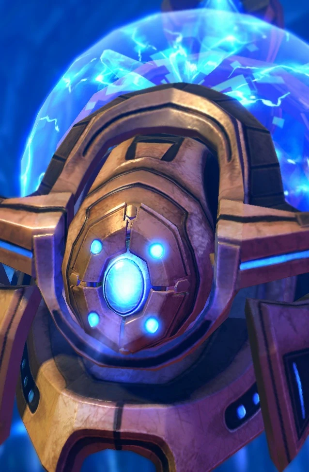

Часовой
| Часовой | |
|  | |
| Информация о юните | |
| Тип: | Наземная боевая единица |
| Описание: | Энергетический манипулятор. Может использовать Силовое поле, Защитный щит и Галлюцинацию. |
| Построен из: | Врата |
| Стоимость: |  50 50  100 100  23 23  2 2 |
| Горячие клавиши: | E |
| Атака:Луч разрушения | |
| Цели: | Земля/Воздух |
| Урон | 6(+1) |
| DPS: | 8.4 (+1.4) |
| Перезарядка: | 0.71 |
| Ранг: | 5 |
| Статистика юнита | |
| Защита: |  40 40  40 40  1 (+1) 1 (+1) |
| Атрибуты: | Легкий Биологический Псионик |
| Энергия: | 50/200 |
| Зрение: | 10 |
| Скорость: | 3.5 |
| Размер груза: | 2 |
Часовой - Часовые, используются для поддержки зилотов, представляют собой боевые дроны протоссов. Часовые используют разрушающий луч, чтобы атаковать своих врагов, и предлагают защиту через защитные щиты. Часовые могут двигаться и парить над землей с помощью генераторов, которые создают карманы невесомости.
Часовые также могут проецировать барьеры силового поля, чтобы остановить или разделить силы противника. Это делается путем превращения всплесков энергии в небольшой непроницаемый барьер, чтобы препятствовать, блокировать или направлять продвижение вражеских войск. В то время как существа или машины невероятных размеров могут разрушить целостность этих полупрозрачных силовых полей, обычные солдаты и транспортные средства становятся кормом для оружия дальнего боя протоссов.
Часовые могут защищать союзников с помощью щитов-хранителей, созданных путем превращения света в полутвердое состояние. Благодаря этому часовой может окружить себя щитом, охватывающим территорию, для защиты наземных сил протоссов. Снаряды или энергетические взрывы, проникающие в поле, теряют часть своей кинетической или тепловой энергии и часть своей эффективности. Из-за своего значительного радиуса действия щит-хранитель недостаточно мощен, чтобы иметь большое значение против более крупных типов боеприпасов.
Часовые также могут создавать галлюцинаторные образы с помощью встроенного голопроектора. Эти голограммы могут привлечь на себя вражеский огонь, в то время как настоящая ударная группа протоссов маневрирует на позиции, чтобы нанести смертельный удар. Эти галлюцинации состоят из твердого света и являются трехмерными, способными имитировать воинов, транспортные средства и конструкции протоссов. Каждая реплика, хотя и ограничена по продолжительности, способна выдержать некоторую степень наказания. Цель этих реалистичных изображений двояка: заставить врагов протоссов поверить, что они сражаются с гораздо большей силой, чем предполагалось, и защитить жизни протоссов.